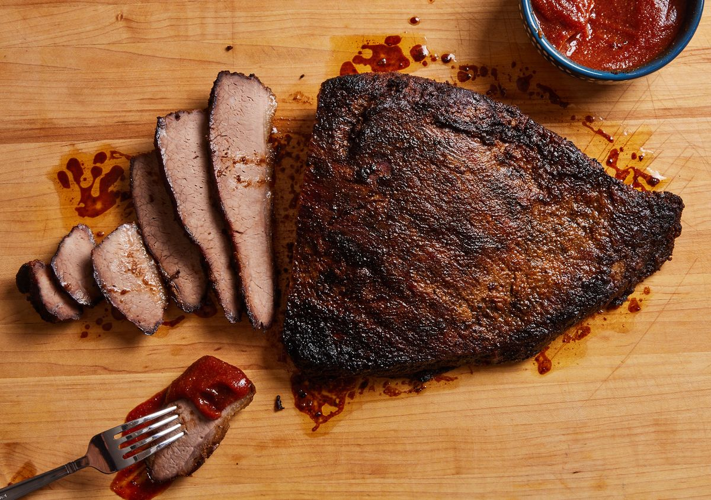
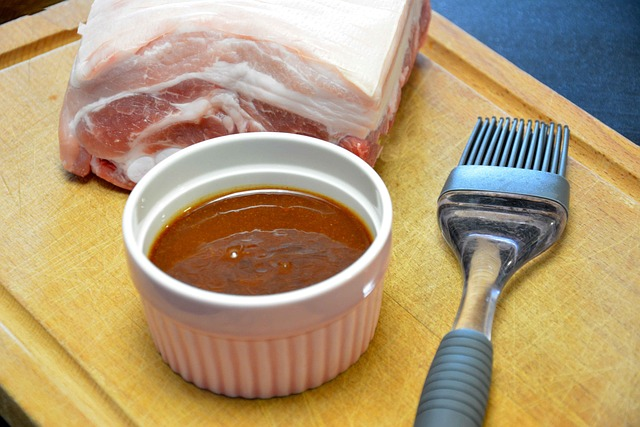

Directions
Cook the beef at 275 degrees in tightly covered Dutch oven for four hours. Sprinkle with salt, pepper, and paprika. Put onion slices around the meat before roasting. Set aside while making the barbecue sauce.
Beef Brisket
Saute the onion in shortening in a saucepan. Add all the other ingredients except for the salt. Cook slowly for 30 minutes. Add the salt to taste at the end.
Slice the beef and put in a casserole dish. Pour the sauce over the meat and bake at 325 degrees until hot.

Barbecue Sauce